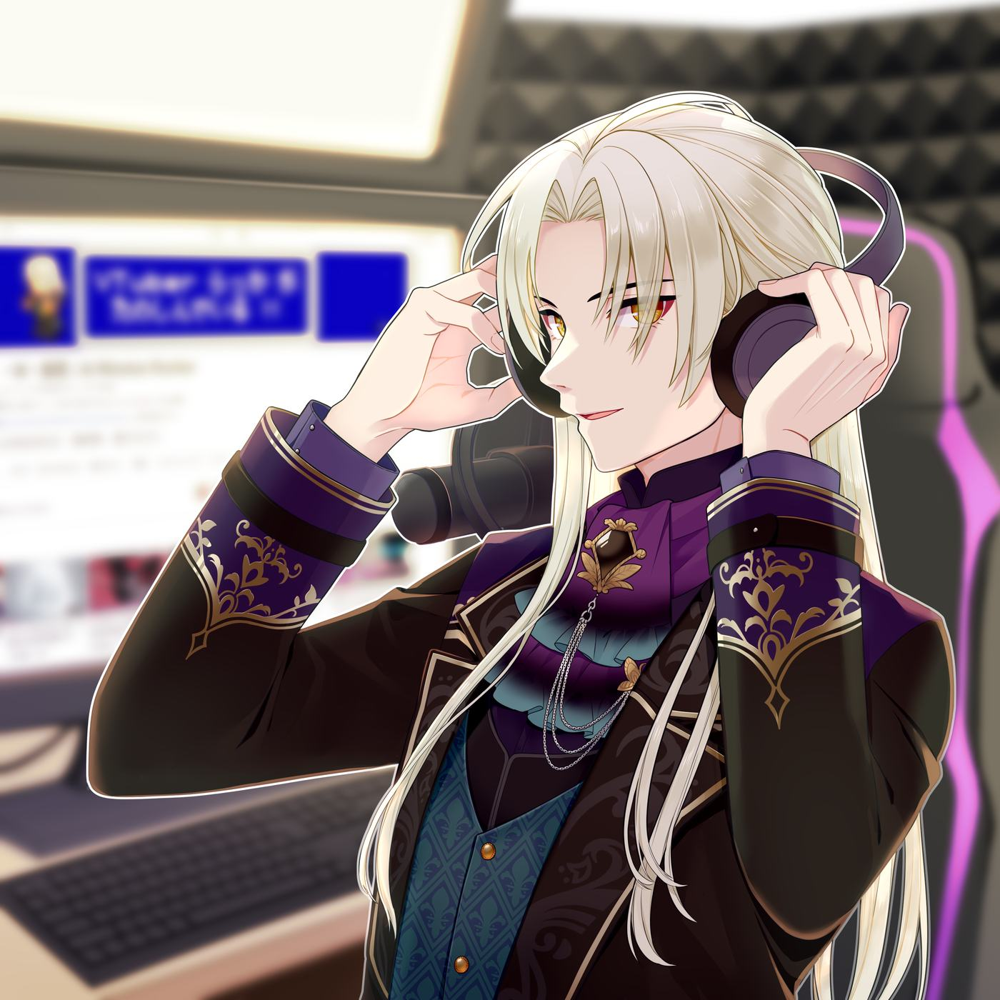
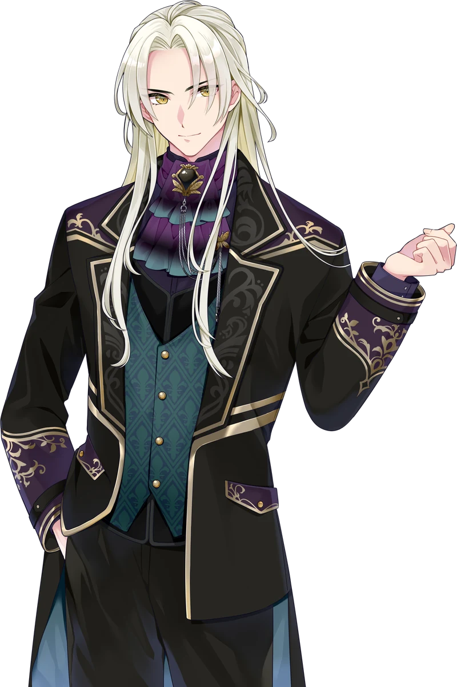

AlternativeRadio
ラジオ傑作回
雑学勝負から音楽の話まで、濃い30分。
大人になっても、遊び足りない。
2026.09.21 — 09.27 ／ WEEKLY SCHEDULE
Welcome
仕事終わりに、少しだけ寄り道を。ラジオのように話し、ロックを歌い、レトロゲームを遊び、旅先で歴史と地理を巡る。大人のための趣味時間をお届けしています。

ILLUSTRATION BY @hori_games25
おやすみ
未定
おやすみ
変更や追加のお知らせはXで随時更新しています。
Xで最新情報を見る1,000+
YouTube登録者
ほぼ半々
視聴者の男女比男性 51.6% ／ 女性 48.4%
46
主催イベント最大同時接続
15
主催イベント出演者数
3D / Live2D
対応モデル
登録者数は2026年5月に1,000人を達成。同時接続46名・出演者15名は2025年7月に主催した大規模声劇イベントの実績です。男女比はYouTubeアナリティクス2026年8月29日時点の数値です。

Profile
藍・W・楽歌
あい・うぃんすとん・らっか
VIRTUAL ENTERTAINER ／ VTUBER
歌とお芝居、ゲーム、旅行、歴史・地理が好きな男性VTuber。舞台役者、イベントMC、インターネットラジオDJなどの経験を持ち、いまはトーク、歌、レトロゲーム、旅をテーマに活動しています。
仕事終わりにふらっと立ち寄れる場所。昔好きだったものを、今の自分でもう一度楽しめる時間。そんな“大人の趣味時間”をお届けしています。
AlternativeRadio
雑学・音楽・近況。毎週月曜21:00からYouTubeで生放送。
Music
the pillows をはじめ90年代を中心に。歌枠リレー、ライブ出演も。
Retro Game
子どもの頃に遊んだ名作を、今だから分かる面白さで。
Voice Drama
舞台俳優の経験を活かした声劇、朗読配信。
Vlog
史跡巡り、ドライブ、グルメ。歴史と地理の視点で。
出演依頼、コラボ、その他のお問い合わせはフォームまたはX DMからご連絡ください。企業・法人からのご相談は、対応領域と実績をまとめた お仕事のご相談ページ をご覧ください。
お問い合わせから3営業日以内にご返信します。